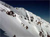
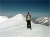

The American Fork Twins tower over the Gad Valley at Snowbird, Utah. There's a ridge between the East Twin (11,443 ft.) and the taller West Twin (11,489 ft.). Dropping off the top of the West Twin is Pipeline, a long chute that empties out at Pipeline Bowl in the Little Cloud area of Snowbird; it's perhaps 1000 vertical feet. The red arrow in the photo at the right points to the chute. Click here for a description and photos of hiking the Twins in the summer, and here for a report on snowboarding down Pipeline.
On Sun. April 17, 2005, the usual suspects† hiked from the Tram up the ridge to the East Twin, across the ridge to the West Twin, and skied down Pipeline. Click on the thumbnails to reach the corresponding pages; the pages include navigation links to walk through the photos in the order shown below. These photos were taken by Rick Gardiner.

Ridge to East Twin 
Pipeline

Tram
The Ridge Hike
Joni and Wilma 
Rick & West Twin
The Entrance
Looking Down
In the Chute

Looking Up
† Paul Allard, Joni Borghesani, Rick Gardiner, Dave Gibson, Susan Graham, Dave Hanson, Bev Riedel, Dave Simons, Wilma Corkery, Harry Middleton, Warren Hawkins.